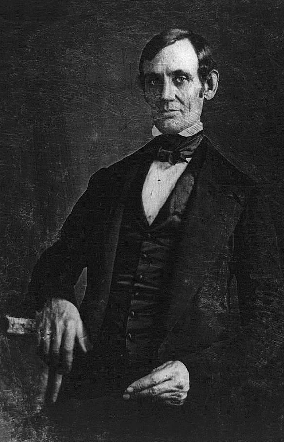
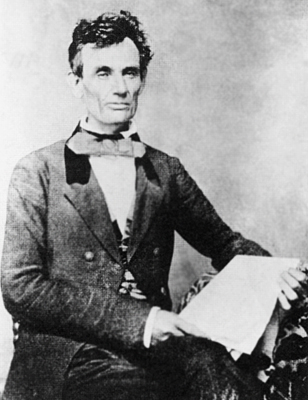

|
Abraham Lincoln had an unusual political career. He suffered
a variety of defeats and disappointments, most notably in
the Senate Contest of 1858. When he was elected president,
he had held no office for over a decade, and had never
served in any sort of administrative post, public or
private. Yet, he was a shrewd and savvy politician. He spent
most of his years between 1840 and 1860 quietly making
political contacts and building a base of support. He also
learned quickly, and though he came into the White House
inexperienced, he was soon able to handle to the job with
considerable skill.
Lincoln's First Election
Lincoln's first ran for office in 1832. Returning to New
Salem after his service in the Black Hawk War, Lincoln
sought a seat in the state legislature. He won almost all
the votes in his own community, but lost the election
because he was not known throughout the county.
Illinois Legislature
In 1834, Lincoln ran again and was elected to the
Illinois House of Representatives. He was reelected in 1836,
1838, and 1840. Political alignments were in a state of flux
during his first two candidacies, but as the Whig and
Democratic parties began to take form, he followed his
political idol, Henry Clay, and John T. Stuart, a
Springfield lawyer and friend, into the Whig ranks. Twice
Lincoln was his party's candidate for speaker, and when
defeated, he served as its floor leader.
Lincoln was thoroughly Whiggish for most of his career,
which in general terms meant that he had a wished to use
government as a tool impose order on the world. To this end,
Lincoln supported an activist economic program, as did most
other Whigs. His greatest achievement in the legislature was
to bring about the removal of the state capital from
Vandalia to Springfield, by means of adroit logrolling. This
was a strongly pro-business bit of politicking, for
Springfield's economy was growing rapidly while Vandalia's
was stagnating. On national issues Lincoln favored the
United States Bank and opposed the presidential policies of
Andrew Jackson and Martin Van Buren.
In addition to striving for economic order, Lincoln also
wished to impose moral order on the world. When certain
resolutions denouncing antislavery agitation were passed by
the house, Lincoln and a colleague, Dan Stone, defined their
position by a written declaration that slavery was "founded
on both injustice and bad policy, but that the promulgation
of abolition doctrines tends rather to increase than abate
its evils."
U. S. Congress
Having attained a position of leadership in state
politics and worked strenuously for the Whig ticket in the
presidential election of 1840, Lincoln aspired to go to
Congress. But two other prominent young Whigs of his
district, Edward D. Baker of Springfield and John J. Hardin
of Jacksonville, also coveted this distinction. So Lincoln
stepped aside temporarily, first for Hardin, then for Baker,
under a sort of understanding that they would "take a turn
about." When Lincoln's turn came in 1846, however, Hardin
wished to serve again, and Lincoln was obliged to maneuver
skillfully to obtain the nomination. His district was so
predominantly Whig that this amounted to election, and he
won handily over his Democratic opponent.
|

The first known photo of Abraham Lincoln, from 1847.
|
Lincoln worked conscientiously as a freshman congressman.
Both from conviction and party expediency, he went along
with the Whig leaders in blaming the Polk administration for
bringing on war with Mexico, though he always voted for
appropriations to sustain it. His only notable action was
his very vocal support for 'spot resolutions', which
demanded to know where blood had first been shed, on Mexican
soil or American soil. "Spotty Lincoln's" opposition to the
war was unpopular in his district, however. When the
annexations of territory from Mexico brought up the question
of the status of slavery in the new lands, Lincoln voted for
the Wilmot Proviso and other measures designed to confine
the institution to the states where it already existed.
In the campaign of 1848, Lincoln labored strenuously for
the nomination and election of Gen. Zachary Taylor. He
served on the Whig National Committee, attended the national
convention at Philadelphia, and made campaign speeches. With
the Whig national ticket victorious, he hoped to share with
Baker the control of federal patronage in his home state.
The juiciest plum that had been promised to Illinois was the
position of commissioner of the General Land Office in
Washington. After trying vainly to reconcile two rival
candidates for this office, Lincoln tried to obtain it for
himself. But he had little influence with the new
administration. The most that it would offer him was the
governorship or secretaryship of the Oregon Territory.
Neither job appealed to him, and he returned to Springfield
thoroughly disheartened.
Never one to repine, however, Lincoln now devoted himself
to becoming a better lawyer and a more enlightened man.
Pitching into his law books with greater zest, he also
resumed his study of Shakespeare and mastered the first six
books of Euclid as a mental discipline. At the same time, he
renewed acquaintances and won new friends around the
circuit. Law practice was changing as the country developed,
especially with the advent of railroads and the growth of
corporations. Lincoln, conscientiously keeping pace, became
one of the state's outstanding lawyers, with a steadily
increasing practice, not only on the circuit but also in the
state supreme court and the federal courts. Regular travel
to Chicago to attend court sessions became part of his
routine when Illinois was divided into two federal
districts.
Lincoln took only a perfunctory part in the presidential
campaign of 1852, and was losing interest in politics. Two
years later, however, an event occurred that roused him, he
declared, as never before. The status of slavery in the
national territories, which had been virtually settled by
the Missouri Compromise of 1820 and the Compromise of 1850,
now came to the fore. In 1854, Stephen A. Douglas, whom
Lincoln had known as a young lawyer and legislator and who
was now a Democratic leader in the U. S. Senate, brought
about the repeal of a crucial section of the Missouri
Compromise that had prohibited slavery in the Louisiana
Purchase north of the line of 36 degrees 30';. Douglas
substituted for it a provision that the people in the
territories of Kansas and Nebraska could admit or exclude
slavery as they chose.
Lincoln Becomes a Republican
The congressional campaign of 1854 found Lincoln back
on the stump in behalf of the antislavery cause, speaking
with a new authority gained from self-imposed intellectual
discipline. Henceforth, he was a different
Lincoln--ambitious, as before, but purged of partisan
pettiness and moved instead by moral earnestness.
The Kansas-Nebraska Act so disrupted old party lines that
when the Illinois legislature met to elect a U.S. senator to
succeed Douglas' colleague, James Shields, it was evident
that the Anti-Nebraska group drawn from both parties had the
votes to win, if the antislavery Whigs and antislavery
Democrats could united on a candidate. However, the Whigs
backed Lincoln, and the Democrats supported Lyman Trumbull.
Though Lincoln commanded far more strength than Trumbull,
the latter's supporters were resolved never to desert him
for a Whig. As their stubbornness threatened to result in
the election of a proslavery Democrat, Lincoln instructed
his own backers to vote for Trumbull, thus assuring the
latter's election.
With old party lines sundered, the antislavery factions
in the North gradually coalesced to form a new party, which
took the name Republican. Lincoln stayed aloof at the
beginning, fearing that it would be dominated by the radical
rather than the moderate antislavery element. Also, he hoped
for a resurgence of the Whig party, in which he had attained
a position of state leadership. But as the presidential
campaign of 1856 approached, he cast his lot with the new
party. In the national convention, which nominated John C.
Frémont for president, Lincoln received 110 ballots for the
Vice Presidential nomination, which went eventually to
William L. Dayton of New Jersey. Though Lincoln had favored
Justice John McLean, he worked faithfully for Frémont, who
showed surprising strength, notwithstanding his defeat by
the Democratic candidate, James Buchanan.
The Lincoln-Douglas Debates
|

Abraham Lincoln as he appeared
at the time of the Lincoln-Douglas debates (he did
not grow a beard until 1860).
|
With Senator Douglas running for reelection in 1858,
Lincoln was recognized in Illinois as the strongest man to
oppose him. Endorsed by Republican meetings all over the
state and by the Republican State Convention, he opened his
campaign with the famous declaration: "A house divided
against itself cannot stand. I believe this government
cannot endure permanently half slave and half free." Lincoln
challenged Douglas to a series of seven joint debates, and
these became the most spectacular feature of the campaign.
Douglas refused to take a position on the rightfulness or
wrongfulness of slavery, and offered his "popular
sovereignty" doctrine as the solution of the problem.
Lincoln, on the other hand, insisted that slavery was
primarily a moral issue and offered as his solution a return
to the principles of the Founding Fathers, which tolerated
slavery where it existed but looked to its ultimate
extinction by preventing its spread. The Republicans polled
the larger number of votes in the election, but an outdated
apportionment of seats in the legislature permitted Douglas
to win the senatorship. Despite the defeat, the Senatorial
contest was very important for both the Republicans and for
Lincoln. For the Republicans, the campaign generated major
national publicity and made voters aware of the Republican
position on the issues, convincing many Northern voters that
the Republicans were not the fire-eating radical
abolitionists that the Democrats had suggested they were.
For Lincoln, the debates and the election made him a
nationally prominent figure and a leader of the Republican
party. From that point forward he worked ceaselessly to
promote himself and his party. For most of 1859, he
maneuvered quietly behind the scenes, but In February 1860,
he accepted an invitation from Henry Ward Beecher to deliver
a speech at Beecher's church in New York. By the time he
arrived in New York, sponsorship of the speech had been
taken over by the Young Men's Central Republican Union, and
was moved from Beecher's church to the Cooper Union.
The speech Lincoln delivered at Cooper Union was a
masterful exploration of the political paths open to the
nation. In the first part of the address, Lincoln closely
examined Douglas' popular sovereignty, and especially his
contention that it was simply a continuation of the policies
of the Founding Fathers. Lincoln combed through the records
of the Constitutional Convention and debates in the first
Congresses and was able to demonstrate that of the
thirty-nine men who had signed the Constitution at least
twenty-one had demonstrated by their votes that the federal
government had the power to control slavery in the
territories. This, confirmed an argument Lincoln had been
making since 1858: that prior to Douglas' introduction of
the Kansas-Nebraska Act it was impossible "to show that any
living man in the whole world ever did ... declare that ...
the Constitution forbade the Federal Government to control
as to slavery in the federal territories."
Next, Lincoln examined the Southern position, arguing
that the Republicans were the true constitutional
conservatives, while fire-eating Southerners were the
aggressors, they were the ones who wanted to trample on the
Constitution. "That is cool," Lincoln remarked. "A
highwayman holds a pistol to my ear, and mutters through his
teeth, 'Stand and deliver, or I shall kill you, and then you
will be a murderer."
Lincoln concluded by explaining what Northerners should
do, namely to move forward in restricting slavery to the
states it already existed in. In his famous conclusion,
Lincoln said "Neither let us be slandered from our duty by
false accusations against us, nor frightened from it by
menaces of destruction to the Government nor of dungeons to
ourselves. Let us have faith that right makes might, and in
that faith, let us, to the end, dare to do our duty as we
understand it." The Cooper Union address was a superb
performance, and it won many Eastern voters over, who might
previously have been unwilling to vote for an unknown
Westerner that they perceived as rough-hewn and
unsophisticated. The speech was widely reprinted, and
essentially became the Republican party's official position
on the issues surrounding slavery. This is where Lincoln
stood politically when it came time for the Republicans to
select a presidential candidate for the election of 1860.
Source: Christopher Bates for the History 139A website
|